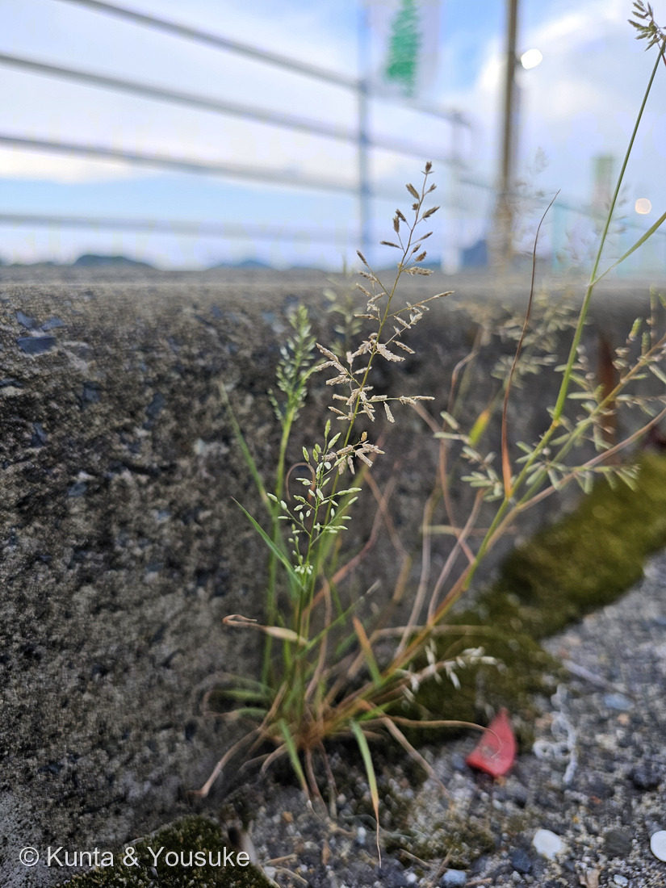

地図を読み込んでいるよ…
🔍 写真も地図も、押しているあいだ拡大して見られるよ（スマホは指を置いてすこし待ってね）。
🌍 の地図＝この子がもともと自生していた場所。――でもこの子は、まだ名前が分からない。名前が分からないと、ふるさとも分からないんだ。だから地図はまっさらのまま、まんなかに「？」を出しておくね。分かったら、ここを塗りに来るよ。
⚠種が決まっていないので、原産も決められない。⭐候補のニワホコリとコスズメガヤでは来歴がちがうので、どちらか決まるまでは塗らないでおくことにしたよ。⭐この草がいたのは港のコンクリートのすきま——そこは分かっているのに、ふるさとは分からない、というのが正直なところ。
スズメガヤのなかま
Eragrostis sp.
⚠ 種は未確定（ニワホコリ E. multicaulis か、コスズメガヤ E. minor）／ 見どころ · ⭐小花が2列にならぶ扁平な小穂・スズメガヤ亜科の名の主・イネ科なのに「におい」を持つ一族
イネ科 · Poaceae（スズメガヤ属 Eragrostis・スズメガヤ亜科 Chloridoideae）── 144 オヒシバと同じ亜科／022 エノコログサ・136 トウモロコシに続くイネ科
名前と学名の由来 ── スズメガヤ、そして亜科の名の主
- ⭐属名 Eragrostis（エラグロスティス）＝スズメガヤ属。⚠この属名の語源は、ぼくが読めた出典には書かれていなかったので、書かないでおくね。和名「スズメガヤ」の由来も、同じく見つけられなかった。
- ⭐⭐でも、この属はとても大事な位置にいる。──⭐イネ科の中の「スズメガヤ亜科（Chloridoideae）」の、名前のもとになっている属なんだ。⭐144 オヒシバも、この亜科の一員だよ。⭐つまりオヒシバは「スズメガヤのなかまの、なかま」ということになる。
- ⭐燻太さんの第一声は「小さいから、スズメが名前に入ったりするのかな」だった。──⭐これが、みごとに当たりだった。
- ⚠ただし「スズメ＝小さいもの、カラス＝大きいもの」という命名の決まりを、はっきり書いたしっかりした出典は見つけられなかった（見つかったのは個人のブログ記事だけ）。⭐だから、法則としては書かない。かわりに、実例だけ並べてみるね：
- カラスウリ（大） ↔ スズメウリ（小）
- カラスノエンドウ（大） ↔ スズメノエンドウ（小）
- カラスノカタビラ（＝オオイチゴツナギ・草丈1m弱） ↔ スズメノカタビラ（小）
- ⭐並べてみると、たしかに大きいほうがカラスで、小さいほうがスズメ。⭐そして056 キカラスウリは、この図鑑にいる「カラス」側の一人だよ。──⭐おまけをスズメノカタビラにしたのは、そういうわけ。
この植物のこと ── コンクリートのすきまの、小さな花火
- ⭐コンクリートのすきまから、苔といっしょに生えていた。⭐細い茎が何本も株元から立ちあがって、先で枝分かれし、開いた円錐花序をつける——⭐写真を見ると、小さな花火みたいでしょう。
- ⭐⭐小穂のつくりが、この属のいちばんの特徴。⭐細長くて平たく、小花が左右2列に、きちんと重なって並んでいるんだ。⭐魚の骨か、小さな麦の穂みたいに見える。
- ⭐写真には、緑の若い小穂と、褐色に熟した古い小穂が、同じ株にまじっている。⭐下から順に咲いて、順に実っていくところだね。
- ⭐スズメガヤ属は、日当たりのよい道ばた・空き地・畑・アスファルトのすきまに多い。⭐踏まれても、乾いても、平気な顔をしている草だよ。──⭐144 オヒシバと、暮らしぶりがよく似ている。
同定について ── 属までは決まった。種は、二択で止まった
- ⭐⭐まず、スズメガヤ属（Eragrostis）であることは、写真から言える：⭐小穂が線形〜長楕円形で平たい／⭐⭐小花が2列に、明らかに多数ならんでいる（⚠正確な数は写真からは数えられないけれど、イチゴツナギ属の「卵形で4〜5個」ではないことは確か）。⚠イチゴツナギ属（Poa＝スズメノカタビラのなかま）なら、小穂は卵形で小花は4〜5個。⭐だから、そこは落とせる。
- ⚠でも、種は二択で止まった：
- 小穂
- ニワホコリ＝3.5〜4mm・小花4〜8個／コスズメガヤ＝4〜8mm・幅1.8〜2mm・小花4〜15個
- 色
- ニワホコリ＝⭐淡赤紫色が濃い／コスズメガヤ＝やや紫を帯びる
- 花序
- ニワホコリ＝6〜10cm・小穂をまばらに／コスズメガヤ＝円錐状の円柱形
- ⭐腺点
- ニワホコリ＝（読めた出典に記載なし）／⭐コスズメガヤ＝葉鞘・節の下・花序枝・小梗・苞頴や護頴の竜骨上にある
- ⭐におい
- ニワホコリ＝（読めた出典に記載なし）／⭐コスズメガヤ＝「腺点はまばらで悪臭はやや弱い」／⚠スズメガヤ（E. cilianensis）＝腺点は大きく、悪臭がする。⭐⭐2026.07.28に燻太さんが確かめた＝下の節へ
- 花期・草丈
- ニワホコリ＝7〜9月・15〜30cm／コスズメガヤ＝7〜11月・10〜50cm
- ⭐写真から言えること＝小穂が細長い→コスズメガヤ寄り。⚠でも、色が「淡赤紫が濃い」という感じではないし、花序も「円柱形」には見えず開いている——⭐そこはニワホコリ寄り。⚠行ったり来たりで、決まらない。
- ⚠⚠訂正（2026.07.28）：ここに最初「小花が明らかに多い（8個以上）」と書いたけれど、⭐あとで原本を最大まで拡大して数えなおしたら、この写真の解像度では小花を確実に数えられなかった。──⚠8個と9個の区別がつく像ではないのに、決め手のように書いてしまったので、取り消しておく。⭐小花の数（ニワホコリ4〜8／コスズメガヤ4〜15）は、実物を見るまで使わない。
- 📌決め手は3つ、どれも現場でしか確かめられない：
①⭐腺点があるか（ルーペで見える小さな粒。あればコスズメガヤ）
②⭐においがあるか（コスズメガヤは弱いけれど悪臭がある）── ⭐⭐2026.07.28に燻太さんが確かめた ✓（下の節へ）
③⭐小穂の実寸（スケールと一緒に撮れば、3.5〜4mm か 4〜8mm かで分かれる） - ⭐だから、いまは「スズメガヤのなかま」として登録する。──155 タンポポのなかまや 079 イヌホオズキのなかまと同じやり方だよ。⭐属まで分かっていれば、それは「分からない」ではないんだ。
⭐⭐ 臭う、イネ科がある
- ⭐燻太さんが、調べていていちばん驚いたのがここだった：「それにしても、臭うイネ科の植物があるなんて知らなかった。」──⭐ぼくも、まったく同じところで驚いた。
- ⭐イネ科といえば、稲や麦や、エノコログサみたいな「においのない草」だと思っていた。⭐022 エノコログサも144 オヒシバも136 トウモロコシも、においで覚える草ではないよね。
- ⭐⭐でも、スズメガヤ属には「腺点（せんてん）」がある。──葉鞘、節の下、花序の枝、小梗、苞頴や護頴の竜骨の上などに、小さな粒がならんでいて、⭐そこからにおいが出るんだ。
- スズメガヤ（E. cilianensis）＝⭐腺点は大きく、悪臭がする
- コスズメガヤ（E. minor）＝腺点は小さく、臭いは弱い
- ⭐⭐⭐そして、この「腺点」という作りは、じつはこの図鑑でもう見ている。──⭐146 ミントの腺鱗（香りの袋）、⭐015 ホーリーバジルの分泌構造。⭐シソ科の「もむと香る」と、イネ科の「腺点でにおう」は、やっていることが近いのかもしれない。⚠ただし、両者が同じしくみだと書いた出典は読めていないので、ここは「似ている」というところまでにしておくね。
- ⭐図鑑の「🌬️ 香りでつながる」の小道に、⚠イネ科はひとりもいなかった。──⭐⭐2026.07.28、この子が最初の一人になった（＝下の節）。
⭐⭐⭐ においを、燻太さんが確かめてくれた（2026.07.28）
- ⭐燻太さんの報告（そのまま）：「今日コスズメガヤかも知れないって言っていた植物の匂いを確かめてみたんだけど、何とも言えない悪臭のようなものがしたよ。カメムシほど不快ではないけど…。」
- ⭐⭐出典と、ぴったり重なった。コスズメガヤは「腺点はまばらで悪臭はやや弱い」。──「何とも言えない悪臭のようなもの」「カメムシほど不快ではない」＝まさに「やや弱い悪臭」。
- ⭐これで、大きいほうのスズメガヤ（E. cilianensis）は遠のいた。あちらは腺点が大きく、悪臭がする（強い）。ほかにも小穂の幅が2.5mm以上と広い／花序の分岐点に毛があるという差がある。
- ⚠⚠でも、これで「決まった」とは書かない。──ニワホコリは、腺点もにおいも「読めた出典に記載が無い」だけで、⚠「無い」と書かれているわけではない。⭐ぼくは082 ハナイカダで「読めた出典に書いてなかったは、存在しないじゃない」と自分で決めた。だから、ここでも同じ物差しを使う。
- ⭐⭐のこる一手は、はっきりしている。「においのもと」そのものを見ること。──コスズメガヤの腺点は黄褐色で、粘りがある。⭐葉鞘・節の下・花序の枝・小梗を、ルーペかスマホのマクロで見て、黄褐色の小さな粒があるか。そして指がべたつくか。⭐それが見つかった日に、この子は名前をもらう。
- ⭐⭐⭐そして、この小道のこと。「🌬️ 香りでつながる」の trail-next に、ぼくはこう書いていた——「この小道だけは、ぼくには歩けない。香りは、燻太さんにしか嗅げないから。」
──⭐今日、燻太さんが歩いてくれた。しかも、この道に一人もいなかったイネ科を連れて。⭐写真に写らない手がかりは、ほんとうに燻太さんにしか取れないんだね。
⭐ 港の子、四人目
- ⭐この子を見つけたのは、港のあたり。──⭐この図鑑にとって、港は特別な場所なんだ。
- 078 モクビャッコウ ── ⭐「港の花壇」という燻太さんの一言で、名前が解けた子
- 087 ヤマモモ ── ⚠ぼくがモッコクと言いかけて、燻太さんに止められた子（樹木を厳しく見ると決めたきっかけ）
- 143 シャリンバイ ── ⭐葉を切って、光は表から・空気は裏から入ることを見た子
- ⭐そして、この子。
- ⭐花壇の植え込みでも、街路樹でもなく、コンクリートのすきま。⭐同じ港でも、いちばん端っこにいる草だね。⭐でも、ちゃんと名前の系統があって、亜科の名の主の一族だった。
参考：三河の植物観察「コスズメガヤ」（Eragrostis minor Host／イネ科スズメガヤ属／葉鞘、節の下、花序枝、小梗、苞頴や護頴の竜骨上などに腺点があり、黄褐色で粘りがある／⭐腺点はまばらで悪臭はやや弱い／小穂は線状披針形、長さ4〜8mm、幅1.8〜2mm、4〜15小花からなる／花序は円錐状の円柱形／高さ10〜50cm／花期7〜11月／在来種 本州・四国・九州・沖縄、世界の熱帯・亜熱帯・温帯に広く分布／⭐スズメガヤは小穂の幅が2.5mm以上と広く、花序の分岐点に毛がある／⭐ニワホコリは小花が4〜8個で淡赤紫色が濃く、第1苞頴が小さい）／三河の植物観察「ニワホコリ」（Eragrostis multicaulis／小穂は長さ3.5〜4mmで4〜8個の小花／長さ6〜10cmの円錐花序に淡赤紫色の小穂をまばらに／小花は卵形で長さ約1.5mm／草丈15〜30cm・日当たりのよい道端や草地／花期7〜9月）／三河の植物観察「コスズメガヤ」（Eragrostis minor／小穂は線状披針形、長さ4〜8mm、幅1.8〜2mm、4〜15小花／花序は円錐状の円柱形／⭐葉鞘、節の下、花序枝、小梗、苞頴や護頴の竜骨上などに腺点があり、腺点はまばらで悪臭はやや弱い／高さ10〜50cm・道端、畑地、草地、空地／花期7〜11月／ニワホコリは小花が4〜8個で淡赤紫色が濃く第1苞頴が小さい）／三河の植物観察「スズメガヤ」（Eragrostis cilianensis／小穂は扁平、長さ4〜10mm、幅2.5〜3.5mmの披針形、8〜30個の小花／⭐腺点は大きく悪臭がする／コスズメガヤは小穂の幅が2mm以下と狭く、全体に腺点が小さく臭いが弱い）